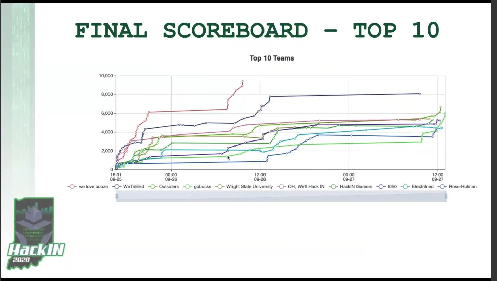

Home
Hi, and welcome to my site!
I'm Ian Haggerty, a senior at Purdue currently seeking full-time employment. My main three languages are Python, C/C++, and Typescript. You can read more about my credentials on my LinkedIn
About
Ian Haggerty is a Computer Engineering student at Purdue University, and is currently finishing his senior year in the Spring of 2021.
He grew up in Indianapolis, IN, and has three little brothers.
Ian plays in the Purdue Philharmonic Orchestra as a violinist, and also plays in Purdue's Domani Quartet.
He wrote sports stories for The Purdue Exponent for two years, and is currently employed as a TA for Purdue's Honors first year engineering class.
Ian is currently immersed in Neil Gaiman's "The Sandman" comic book series.
He also enjoys video games, and his current best Tetris 40 Line Sprint time is 35.03 seconds.
Ian can be reached at ianhaggerty3 [at] gmail [dot] com
Contact
I can be reached at ianhaggerty3 [at] gmail [dot] com
LinkedIn: ianhaggerty
GitHub: ianhaggerty3
Blog
Tetris Stats Dev Log #1
April 27, 2021
I've been working on a new and exciting personal project the past few weeks, and I'm excited to say that I have some cool results to show from it.
The project can be found Here.
The goal of the project is to analyze information from my historic tetris play.
I have consistent stats from the past year of playing a game called "NullpoMino," a popular open-source Tetris.
NullpoMino can be found Here.
So far in the project, I have reverse engineered the NullpoMino replay files to get valuable information,
consolidated that information into a Python data strucure, and then generated several plots to represent the information.
The plots are shown in the project's README and This Reddit post.
I will likely add them to this blog in the future as well.
I am proud of making real results from this project, but there is a lot more still to be done.
There are sure to be many more interesting stats to track on my Tetris play.
In addition, I hope to build an actual usable tool out of my replay parsing software.
Right now, it is not very user-friendly.
Another goal is to build a GUI which shows Tetris stats for the current play section.
I have already looked into using a Python watchdog to track new replay files as they appear,
so the next step would be to build a GUI around that which displays stats in real time.
Overall, I'm really excited about this project.
Tetris is my game, so I think it makes sense for me to spend my extra time working on software for something I'm interested in.
I can find a lot more motivation to work on this project than other personal projects I've worked on in the past.
Terminal Midwest Regional 2021
March 17, 2021
I competed in the Terminal Midwest Regional last week, and it was a lot of fun!
Terminal is an AI Programming Competition hosted by Correlation One.
This was my third time competing in a Terminal event, and it was hosted virtually.
There is a global competition that you can try out on their website.
They also host student competitions with variants of the current season's game rules.
For this regional, I teamed up with Phillip Zao and Shilin Ma to craft an adaptive, tower-defense style Python algorithm.
We collaborated remotely over the course of a week, and we were able to incorporate ideas from all three participants.
Phillip focused on building nice, interchangeable macro strategies.
I switched between these strategies by analyzing our past performance and analyzing enemy defences.
Shilin looked over our replays and found irregularities in how we behaved.
She found several key bugs which appeared up when switching between strategies.
We managed a 9th place finish out of 47 in a stacked competition field, earning $1,000.
I am proud that we were able to work well together remotely as a team.
This was the first time I have earned money at a Terminal event, and I think that our team performance deserved it.
Here is one of the matches from our final algorithm (Note: You need to have a Terminal account to view the replay).
Senior Design
December 14, 2020
I finished up the final requirements of my Senior Design project last week! The project was "Social Distancing Chess," a chess board which enables remote, manual chess play on a physical board between two players. I am proud to say that we were able to meet 100% of our Project-Specific Success Criteria. Check out our Demo Video. Our on-board source code can be found here. There is also a Project Website, but the class archive needs to be fixed for the site to display properly.
Terminal UIUC Vs. Michigan 2020
October 14, 2020
I competed in my second Terminal competition last week with my roommate Matthew MacLean. This was my first time trying the competition in a virtual format. We came up with a lot of cool ideas to compete with our opponents, but couldn't make it out of the first round. The main idea was to make a priority queue of structure to be built, and adjust priorities based on the opponent's strategy. Unfortunately, it was not as adaptable as we had hoped and didn't grant us much of a competitive edge. We were able to open-source our strategy at this repo.
HackIN 2020
September 29, 2020
I participated in HackIN 2020 last week, and had a lot of fun completing a variety of hacking challenges.
HackIN 2020 is a Virtual hacking event hosted by the Indiana Innovation Institute.
One competition focus was on reverse engineering.
It tasked student teams with solving a variety of challenges mostly corresponding to analyzing different programs.
Some challenges involved obtaining and analyzing keypad firmware off of a physical device they sent us.
Others included analyzing a custom kernel module loaded onto an infected computer (simulated with a competition VM), and finally finding vulnerabilities on the malicious party's site.
I focused mainly on the binary reverse engineering aspects of the competition.
I teamed up with two electrical engineers from Purdue Fort Wayne, and we were able to take 9th place out of around 30 teams.
We entered the competition as team "Electrifried," and had the goal to have fun and learn as much as possible.
Here is a graph of our leaderboard position over time:

As you can see, our position dips a little bit at the end.
At this point, we were very stuck on all remaining challenges, so we bought "hints" for all of them.
This helped us learn more about what we didn't know, and I felt that it was very valuable.
The mentors explained what we weren't getting about these challenges, so I knew what to focus on learning next.
Specifically, an unsolved challenge required us to mimic HTTP packets and change the headers to gain admin access to a website.
I thought this would be a lot harder than it actually was, so I am definitely going to learn more about doing packet manipulation with Python now!
This was a very exciting competition for me, because I had dedicated a lot of time over the summer to learning about different binary reverse engineering tools.
I had learned about the subject when taking ECE 404: Introduction to Computer Security.
After that, I completed most of Max Kersten's Binary Analysis course.
I saw the competition as a cool way for me to show off these new skills.
I used Ghidra to help solve challenges, and had a great time coming up with solutions.
As cool as the competition was, I wasn't able to find any leads into binary analysis roles that I would be comfortable with pursuing.